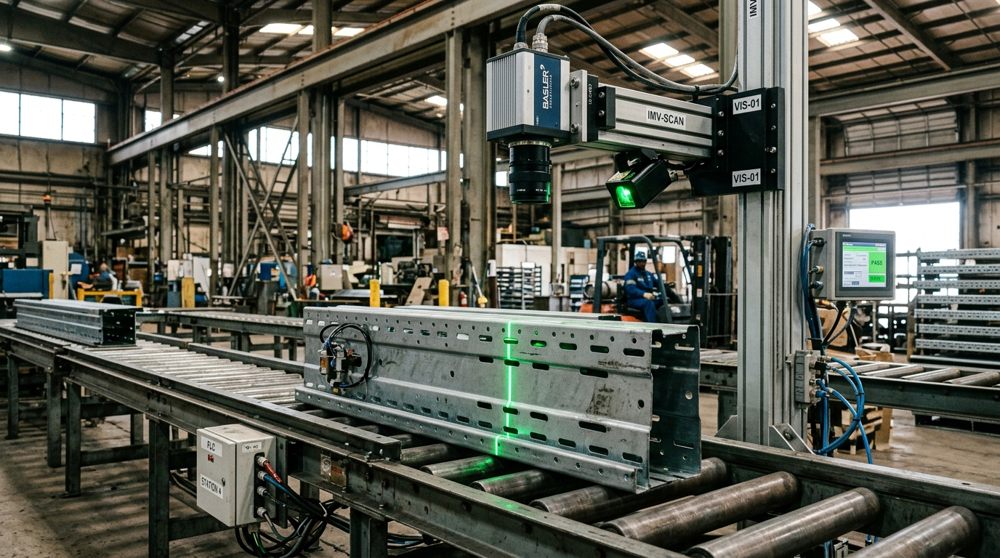

The Next Horizon of Industrial Intelligence.
Explore our planned future capabilities under active development, clearly distinguished from currently available production features.
Planned Operational Innovations
Each initiative is engineered to solve concrete structural manufacturing constraints without disrupting core plant operations.
AI-Assisted Dynamic Scheduling
Real-time factory schedule rebalancing that dynamically adapts cutting, punching, and roll-forming queues when an upstream machine undergoes unexpected maintenance.
Risk & Margin Prediction
Continuous financial variance intelligence connecting raw steel coil price fluctuations directly to project delivery margins and site erection schedules.
Computer Vision QC Inspection
High-speed optical camera inspection measuring hole punch pitch, flange angle, and robotic weld fillet geometry directly on the conveyor line.
Predictive Maintenance Models
Physics-informed machine learning models detecting microscopic bearing friction and hydraulic valve degradation weeks before mechanical failure occurs.
Digital Twin Synchronization
Bi-directional sync connecting physical warehouse rack deflection sensors back into the structural Tekla 3D model for live structural load monitoring.
Autonomous Operational Workflows
Self-orchestrating multi-agent loops that draft technical RFIs, notify suppliers of coil delays, and update shipping manifests upon manager approval.
Optical Computer Vision Quality Control.
Currently in pilot at our Hyderabad facility: multi-camera optical arrays positioned along the roll-former outfeed track punch hole alignment, slot pitch variance, and weld bead continuity at 45 m/min.
- ✓ Sub-millimeter laser profile scanning for structural column uprights
- ✓ Instant flagging of die wear drift before punch tolerance is exceeded
- ✓ Automated digital twin tag generation linked directly to ERP cut lists
